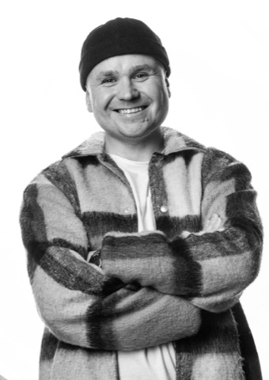

Начинал с убыточного бизнеса
В 2008 году я начал бизнес в строительстве, и до 2010 года он был убыточным. Параллельно пошёл на завод мастером. В 2012 году уволился и занялся инфобизнесом: учился создавать и продавать курсы, вести соцсети. С 2018 года консультирую экспертов и веду их по своей программе
Где я учился и что делал
С 2012 по 2022 год учился у Андрея Парабеллума, в 2013 году у Владимира Довганя, в 2015 году прошёл UPW Тони Роббинса в Лондоне. В 2016 году организовал конференцию «Прибыльные технологии в недвижимости» и выступал на ней спикером. В апреле 2021 года прошёл обучение в Стэнфордском университете по программе «Воркшопы». Автор книги «100 советов по бесплатному привлечению клиентов». Участник Ассоциации независимых бизнес-консультантов «БизКон»
Сначала аудитория, потом продукт
Человек, который боится назвать высокую цену, от уговоров смелее не становится. Уверенность появляется из цифр: растут просмотры и подписчики, и прежняя цена перестаёт устраивать
Моя аудитория
Октябрь 2026: больше 230 тысяч подписчиков в соцсетях, из них YouTube 70 тысяч, TikTok 50 тысяч
Истории людей
- Галина, бьюти-сфера: с 6000 до 27 500 подписчиков за 1,5-2 месяца
- Александр, коуч: 9-13 заявок на консультацию в неделю, первая продажа 230 000 ₽ на второй неделеПрошлая версия программы
- Игорь, ораторское мастерство: рост с 30 000 ₽ до 300 000 ₽ в месяцПрошлая версия программы
- Ольга, денежный астролог: 5-8 заявок в неделю на бесплатных инструментахПрошлая версия программы
- Павел, торги по банкротству: 200 000 ₽ за 2 месяца, две продажи по 100 000 ₽Прошлая версия программы
- Наталья, работа с лишним весом через психологию: не продавала дороже 10 000 ₽, первая продажа в программе на 75 000 ₽Прошлая версия программы
- Руслан, продажи на маркетплейсах: сначала вышел на 100 000 ₽, затем вырос до 300 000 ₽Прошлая версия программы
Миллиона за месяц я не обещаю. Результат зависит и от меня, и от человека, просто сидеть и медитировать не получится
С чего начать читать
Хочешь понять, с чего начать тебе? Напиши мне слово РАЗБОР
Написать РАЗБОР в TelegramМой Telegram-канал